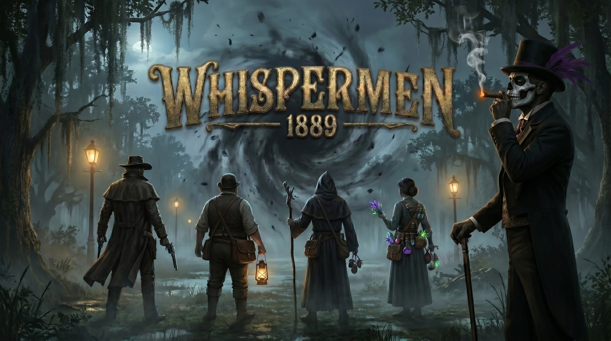
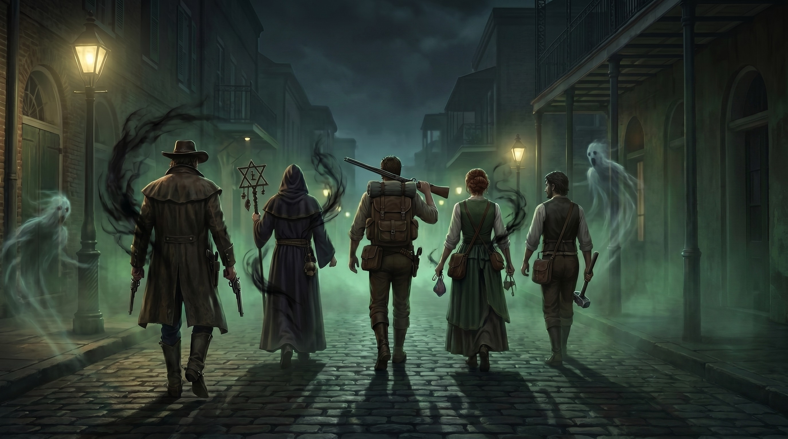
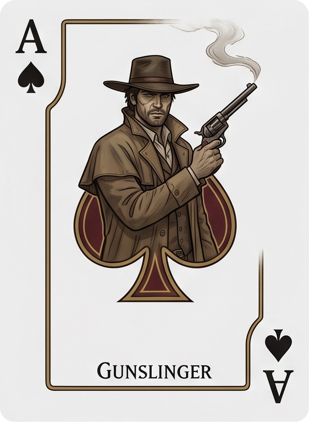
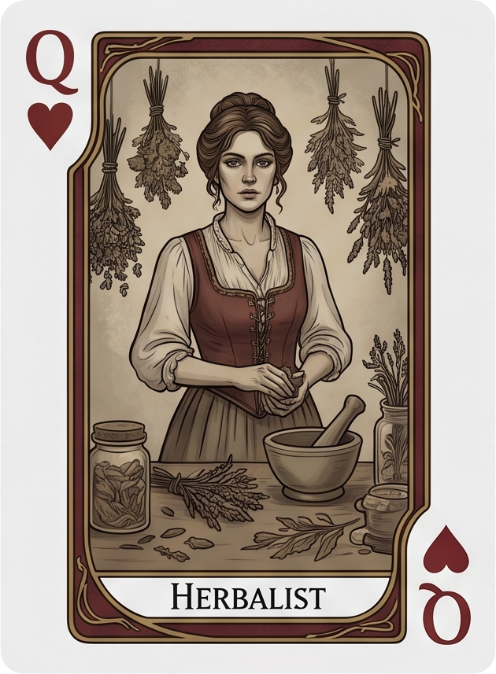
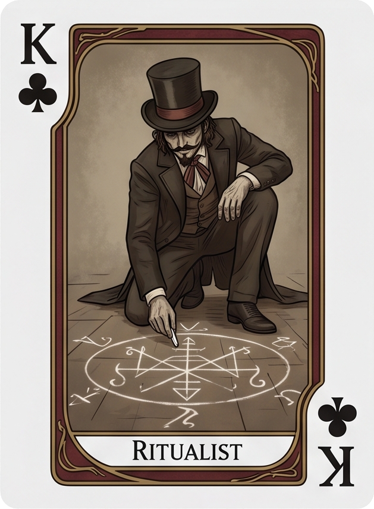
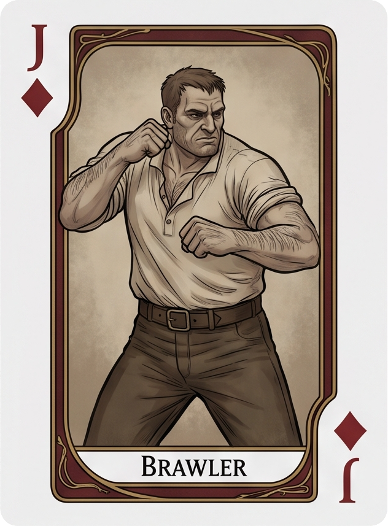
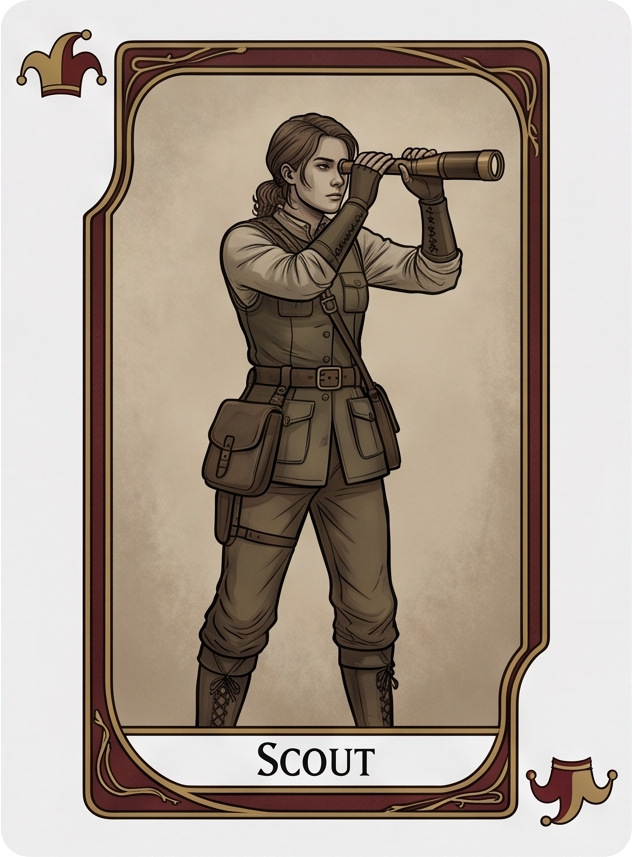

Every spirit remembers.
Turn-based occult tactics in the haunted bayous of 1889 New Orleans.
Draw sacred symbols. Bind voodoo spirits. Hold the line between the living and the dead.
Digital Forge Studios Inc.
New Orleans, 1889. Marie Laveau has been dead for eight years. The boundary between the living world and the spirit world is failing — and something is pushing through.
The graveyards don't stay quiet anymore. The bayou moves when it shouldn't. People whisper about shapes in the fog, about the dead walking the roads at night, about things with too many mouths and not enough mercy.
You lead a ragtag band of mortals touched by the lwa — voodoo spirits who grant power in exchange for service. Armed with six-shooters, sacred herbs, and a whole lot of faith, you're all that stands between New Orleans and what crawls out of the dark.
This is not a game about conquering the supernatural. It's about surviving it.

"Four mortals against the entire underworld. I give you... hmm... twenty minutes. But please — surprise me."
— Baron Samedi
Tactical combat that lives in your stories, not your spreadsheets.
The fog rolls in. Your gunslinger crouches behind a crumbling cemetery wall, revolver cocked, watching the tree line. Something moves. She holds her fire — patience is a weapon here — and waits for the flanking angle. One shot. The action camera swings in close. The bayou goes quiet again.
For now.
No tiles. No grids. Just the Louisiana mud under your boots and a prayer that the next step doesn't put you in a zombie's arms. Real 3D terrain — bayou water drags you slow, roads let you run, and elevation changes everything.
Cover isn't binary. Sixteen rays trace from attacker to target — a fence with gaps, a shattered wall, a cypress trunk. Move two feet left and the math changes entirely. Then the shotgun blast takes the wall apart and the math doesn't matter anymore.
Reserve your action. Set a watch arc. When they move through your line of sight — automatic fire. Stack overwatches to create kill corridors. But the dead don't care about your corridors. And they overwatch too.
Every kill gets its moment. The camera swings over the shoulder, tracks the bullet, lingers on the impact. Every miss stings. Every critical hit lands like thunder. The bayou has never looked this dangerous.

"You moved your gunslinger into the open. Bold. Stupid, but bold. Let's see if the zombies appreciate your bravery."
— Baron Samedi
Sacred geometry. Drawn in blood and bayou dust.
While your gunslinger holds the line, your herbalist kneels in the mud and draws. Sacred geometry. Bayou herbs ground into the dirt. A whisper to the spirits. The veve ignites — and the battlefield changes.
Healing sanctuaries bloom where the dead were clawing. Fire scorches corridors where enemies once advanced. Wards shimmer into existence, turning hopeless positions into fortresses. And when the enemy practitioner starts drawing a counter-veve across the field — that's when you panic.
Death · Dark Bargains · Survival
He'll keep you alive. The price comes later. Baron-touched units thrive at death's edge, harvesting spirit from the fallen and bargaining with forces that would shatter lesser minds.
War · Iron · Fire
The frontline fury. Ogoun's children walk forward when others fall back. They armor up when wounded, burn brighter as the battle rages, and turn pain into power.
Love · Grace · Water
Healing that comes wrapped in fierce protection. Erzulie's chosen move through danger with preternatural elegance — and god help you if you hurt someone they love.
Crossroads · Pathways · Spirit
Finds doors where there are none. Legba's chosen control the flow of battle itself — opening escape routes, bending the action economy, deciding which fights happen.
Wisdom · The Serpent · Patience
The longest game. Damballah's chosen reward stillness and precision. Where others rush, the serpent waits. And the serpent's patience is always rewarded.
Ferocity · Freedom · Fire
Scorched earth. No survivors. Marinette doesn't discriminate — her fire burns everything, including your own squad if they're standing too close. She doesn't care. Freedom has a cost.
Overlapping veves create compound effects. Enemy practitioners draw counter-veves. Taking damage mid-draw can backfire. Every invocation is a gamble.
"Drawing a veve in the middle of a firefight. Either you're devoted or deranged. With mortals, it's usually both."
— Baron Samedi
60 unique builds. No two squads alike. Every run writes a different story.
Five archetypes. Six lwa. Two temperaments — the cool head of Rada, or the burning fury of Petwo. Your lwa offers both paths. Choose wisely. Or don't. Baron finds it funnier when you don't.

The steady hand. When the fog clears, someone's already dead.

Healer. Poisoner. The line is thinner than you'd think.

They draw the deepest veves. The lwa answer loudest for them.

When the dead get close, someone has to meet them.

First in. Last seen. They move like spirits themselves.
"A Petwo Brawler bonded to Marinette. You've created a walking inferno with fists. I approve — from a safe distance."
— Baron Samedi
Not a menu screen. A home worth fighting for.
Between missions, you return to the Crossroads — a living settlement that grows with your progress. What starts as a handful of shacks becomes a fortified frontier outpost. Buildings rise. NPCs wander the dirt roads. Your people gather around fires and tell stories about the things they've seen.
Craft blessed ammunition at the workshop. Buy herbs from the vendor before the stock runs dry. Heal your wounded. Choose your next mission from the board — and hope you chose right. Upgrade facilities, recruit new blood, plan the next sortie into the dark.
And in his corner, Baron holds court. Sardonic advice, cryptic warnings, and the occasional nugget of genuine insight buried under seven layers of sarcasm. He's helpful. In his way.
"You keep building on cursed ground. Adorable. Truly. I'll be here when the foundations crack."
— Baron Samedi
The things you'll learn to dread.
Slow. Relentless. They don't stop and they bring friends. One zombie is a nuisance. Eight surrounding your squad in the dark is a funeral.
Three mouths. Three chances to scream. Armored, massive, and every head has its own attack. You don't fight a Three-Head. You survive one.
The living can be worse than the dead. They use cover, they flank, they overwatch. Trained killers with six-shooters and bad intentions.
Armored nightmares that crush cover like paper. They don't chase — they hold ground, creating zones of death that force you to find another way. There is no other way.
The worst enemy is the one drawing a counter-veve. Your healing sanctuary? Neutralized. Your fire corridor? Turned against you. Kill them first. Always kill them first.
There are things in the deep bayou that don't have names yet. You'll meet them. We're not going to ruin the surprise.
Boss fight action showcase
"The Garkain are hungry tonight. I'd recommend silver bullets — but watching you figure that out the hard way is more entertaining."
— Baron Samedi
Same combat. Same stakes. Now with someone to blame.
The same tactical combat you know, shared with — or against — other players. Steam networking, lobby matchmaking, and deterministic combat that means every outcome is verifiably fair. No desync. No arguments about what happened. Just two tacticians, the bayou, and whatever crawls out of it.
Your campaigns. Your enemies. Your lwa.
Drop-in content packs — same format for first-party DLC and community mods. New missions, new enemies, new talent trees, new veves. Put a folder in the content directory and the game picks it up. No special tools. No compilation. Steam Workshop pipeline ready.
The bayou doesn't wait. Neither should you.
Boss encounters & enemy variety